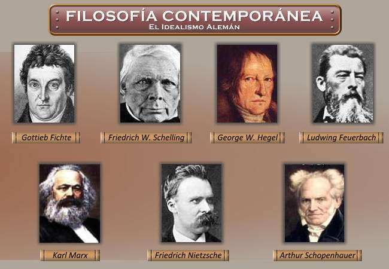

Introducción a la Filosofía Contemporánea
La filosofía contemporánea abarca el pensamiento filosófico desde el siglo XIX hasta la actualidad, marcando una ruptura con la filosofía moderna e incorporando corrientes como el vitalismo, marxismo, existencialismo, estructuralismo, entre otras. Esta etapa está caracterizada por la diversidad de sistemas y la crítica a los valores ilustrados tradicionales.
Tras la influencia del idealismo alemán, especialmente de Hegel, surgieron corrientes reactivas como el existencialismo, el vitalismo y el marxismo. El debate se intensificó por la pérdida de fe en la razón como medio absoluto de conocimiento, debido al avance de las ciencias empíricas y la crisis de los sistemas metafísicos.
Entre los movimientos clave destacan el marxismo, con su crítica económica y social; el historicismo, que valoriza el contexto histórico; el vitalismo, centrado en la fuerza vital más allá de lo físico; y la fenomenología, que estudia la relación entre conciencia y experiencia. También surgieron el existencialismo, el neopositivismo y la filosofía analítica, que introducen enfoques nuevos sobre el lenguaje, la ciencia y la existencia humana.
Por último, se incluyen corrientes como la hermenéutica —interpretación de textos y realidades— y el pragmatismo, que valora la utilidad como criterio de verdad. Todas estas corrientes han configurado un panorama filosófico plural, complejo y en constante evolución.